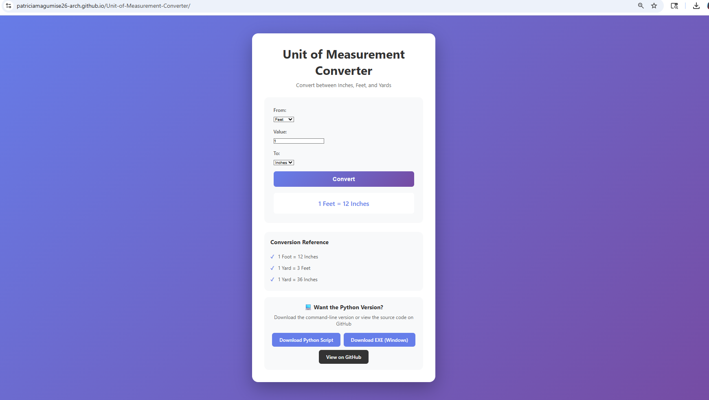
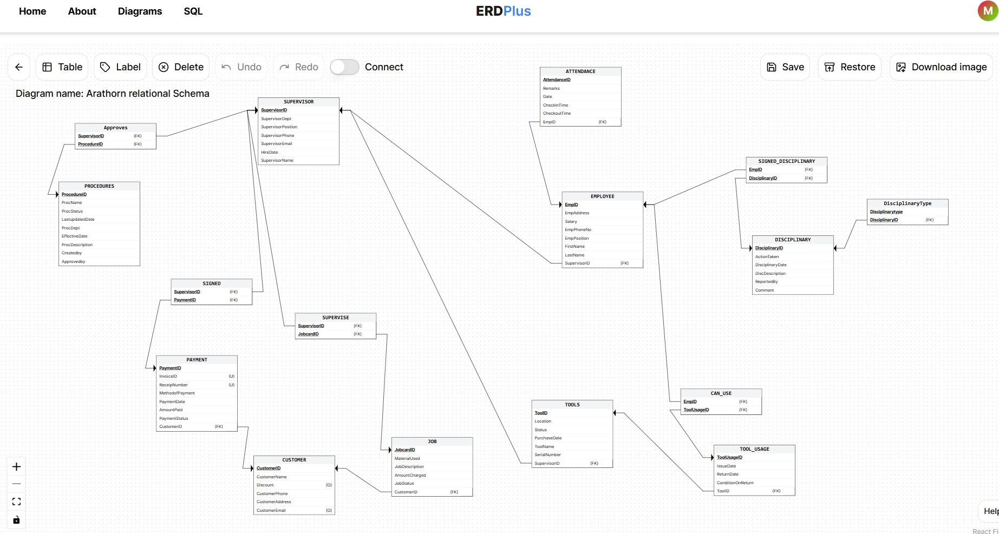

December 5, 2025

This project allows users to convert measurements between inches, feet, and yards through an interactive text-based interface. The program continuously prompts users for input, performs accurate unit conversions, and displays results until the user chooses to exit.
This project focuses on relational database design and SQL implementation, demonstrating the end-to-end development of a database for Arathorn Engineering Company. I designed an Entity Relationship Diagram (ERD) to model core business entities and their relationships, then implemented a normalized relational schema using SQL. The database includes primary and foreign keys, constraints to enforce data integrity, and triggers to apply business rules at the database level. I also developed join and aggregate queries to support reporting and decision-making, as well as views to restrict access to sensitive employee information. This project highlights my ability to translate real-world requirements into a structured database solution.
Skills used: SQL, ERD design, normalization, constraints, triggers, joins


I designed and built a collection of interactive Tableau dashboards using real-world datasets to uncover trends and support data-driven decision making. These projects involved cleaning and preparing data, creating calculated fields, applying filters and parameters, and selecting appropriate visual encodings to clearly communicate insights. The dashboards allow users to explore patterns, compare categories, and interact with the data dynamically. Throughout these projects, I focused on clear visual design, usability, and best practices in data visualization.
Skills used: Tableau, data cleaning, calculated fields, filters, parameters, data visualization.

This project is an interactive Shiny (Python) application developed to analyze U.S. apartment listing data by state, city, and time. The application enables users to explore housing price trends through dynamic filters and interactive visualizations, supporting real-time data exploration and insight discovery. I implemented server-side logic to manage user inputs and data transformations, ensuring smooth interaction and responsive performance. This project demonstrates my ability to combine Python programming with interactive web applications to deliver analytical tools for exploratory data analysis.
Skills used: Python, Shiny, interactive data visualization.